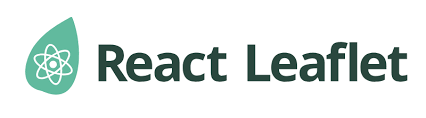
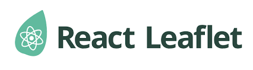

My Project
Road-Condition Development
Race-Condition WebGIS information system is a system that is expected to visualise a model for road condition maps with WebGIS-based maps for users to examine data based on visuals and retrieval decisions. In the development process, using the Agile Methodology. The development stage consists of several stages starting from planning, Implementation, review and retrospective
Framework and Tools
 
